Contents
Introduction
Collaborating on code together with GIT is a bit different than with other code repositories. Beyond pair programming at 1 PC, collaborating on code with GIT is a fairly painless process that doesn't deviate too much from working on any other story.
Prerequisites
- None
Setup Steps
There are a few one-time setup steps (for each person you want to work with) before you are able to get their code on your machine and begin working together.
1. Add their fork(s) as a new remote
The first thing that needs to be done is to retrieve the GitHub URL for the person's fork. The easiest way to get this is from the GitHub page for the project(s) you need to work together on.
-
Click on the number next to the Fork link
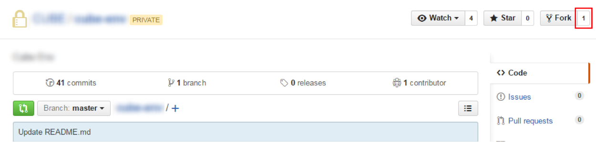
-
Click on the Members tab. This shows a list of everyone that has a fork of this repo.
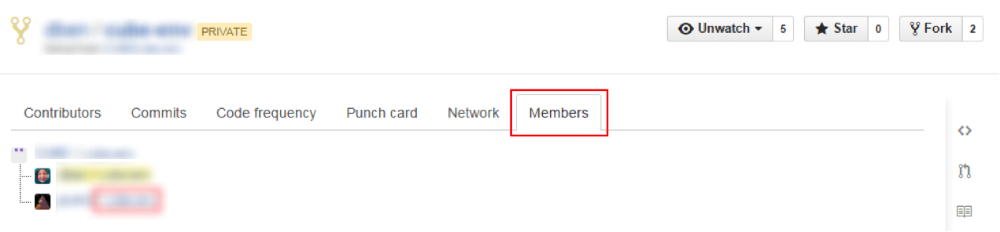
-
Click on the link next to the person whose fork you want to contribute to. This will take you to the page for their fork
-
From the fork page, click on the clipboard icon to copy their URL to be able to clone their repo locally
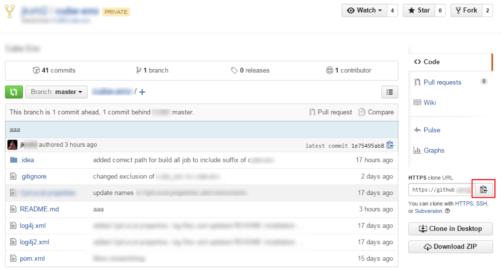
-
From here, we need to use a CLI/console to add the remote to our own local git
 A bash console or Cygwin needs to be used to run the following commands
A bash console or Cygwin needs to be used to run the following commands The console within IntelliJ should work by default
The console within IntelliJ should work by default
-
From the CLI, run the following command to view what remotes you have available: git remote -v
This shows all of your current remotes with the alias you chose and the URLs used for them.
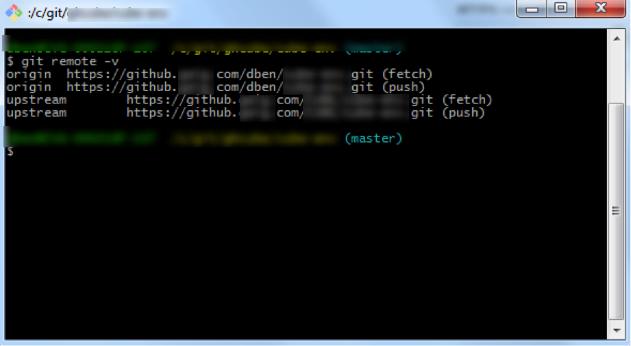
To add the person's remote run the following command: git remote add [alias] [GitHub URL]
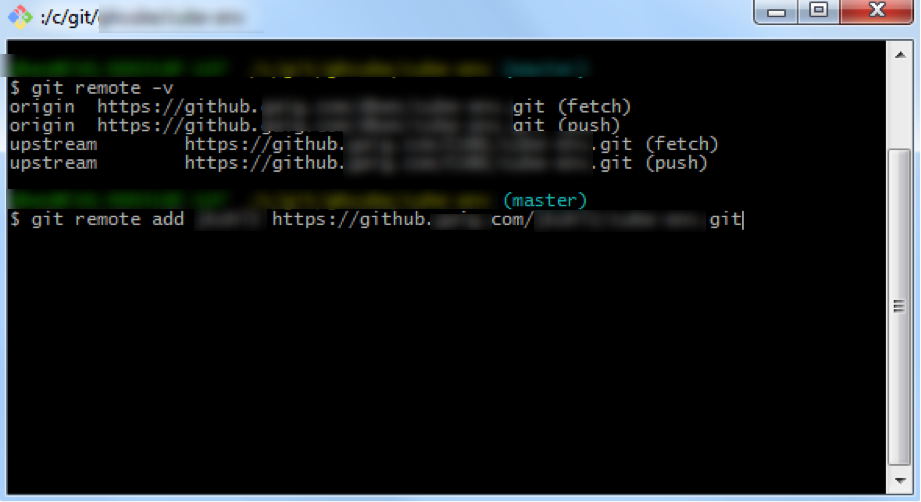
Running the previous command, git remote -v, again will show the newly added remote
-
All that is left is to fetch their changes. This can be done from the CLI (git fetch –all) or IntelliJ
You may still need to do this in IntelliJ for IntelliJ to properly pick up the new remote
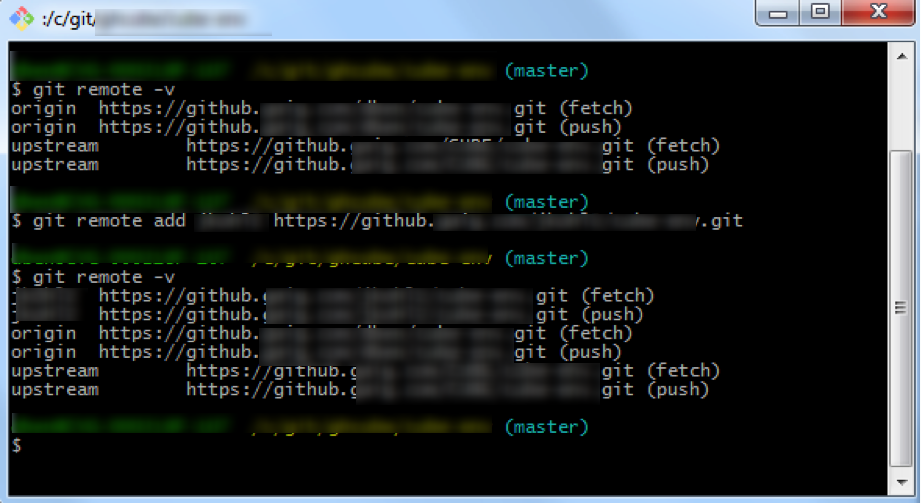
IntelliJ:
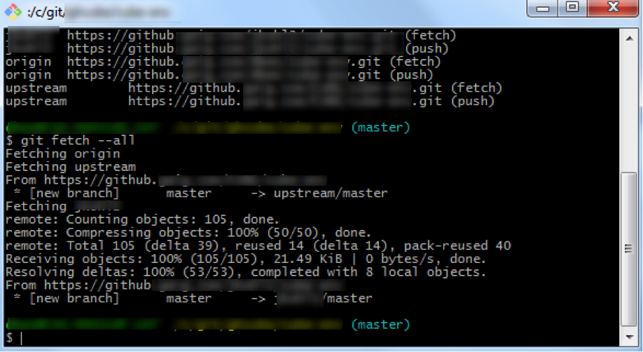
2. Begin collaborating
- Create a branch to work from. Be careful when doing this if you are currently working on something else. If you create the new branch from within IntelliJ, it will by default use the HEAD of wherever you are currently at as the HEAD of the new branch as well. This means that you could be adding changes unintentionally to someone else's work when you finally push your changes.
For the following examples the branch 'Zippy' will be used.
-
Now you can pull in the changes from the other person's branch to begin working on their code, or contributing your code to their branch. In IntelliJ, go to Pull in the code like you would pull in upstream or origin, but select their remote instead
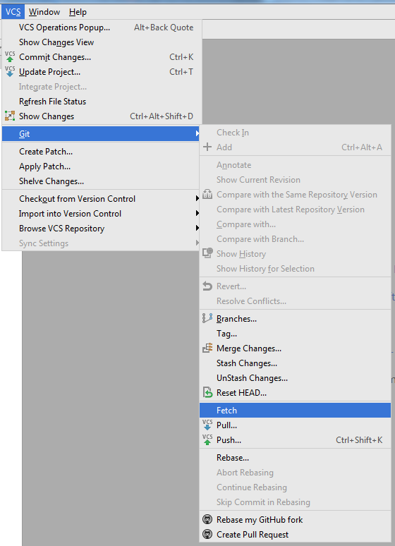
From here select the branch to pull in
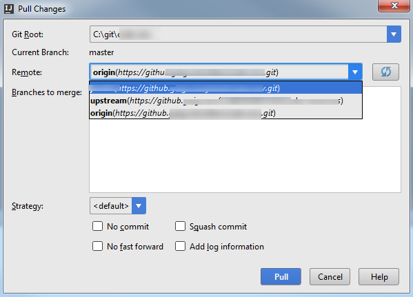
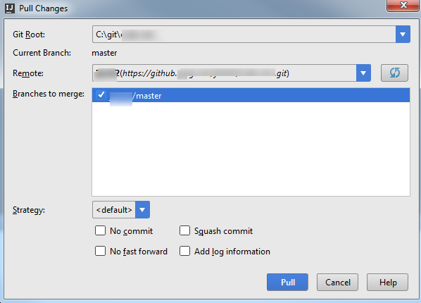
Once it's loaded, you will see the changes in the Version Control window
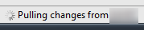
You can browse to their changes from here, or work as you would normally to contribute additional work
-
Do the work you need to do and commit it! Pushing the work to GitHub is the same as well
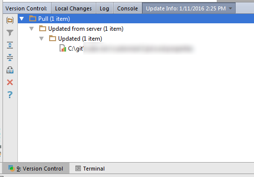
-
Creating a Pull Request is where this differs from your main workflow, you want to create a Pull Request to the other person's repo instead of the Squirrel project
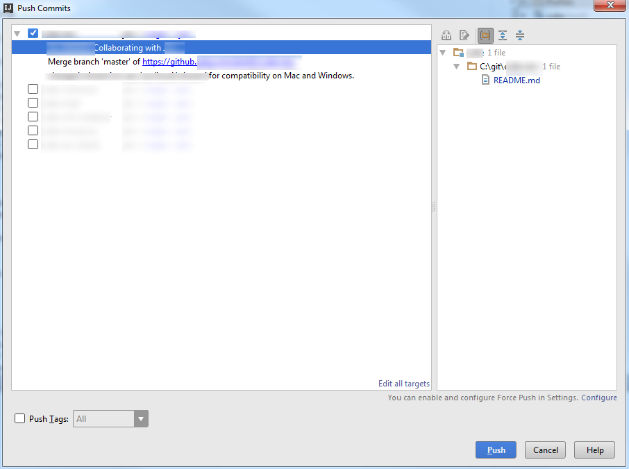
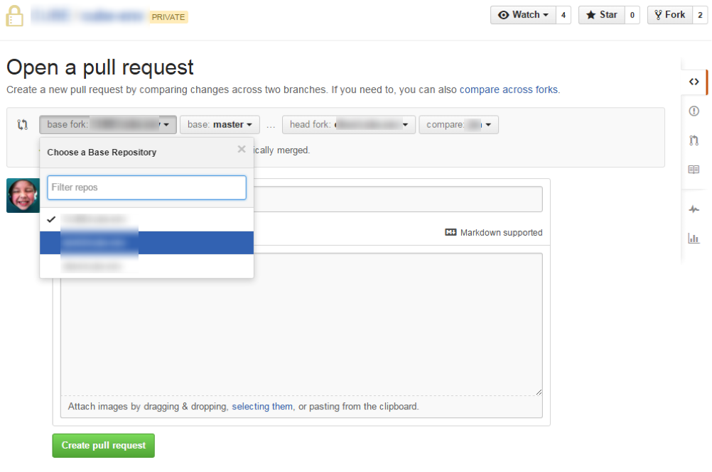
Once the Pull Request is created, it will be listed in that person's repo and they should get an email that a Pull Request was created. At this point, it functions just like any other Pull Request, except that the person who owns the fork will need to merge it in.
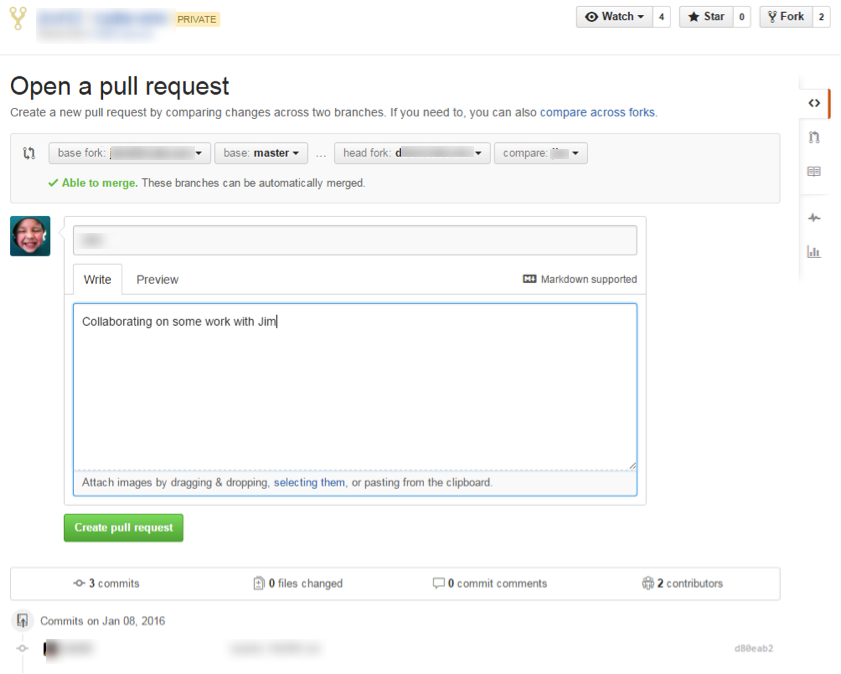
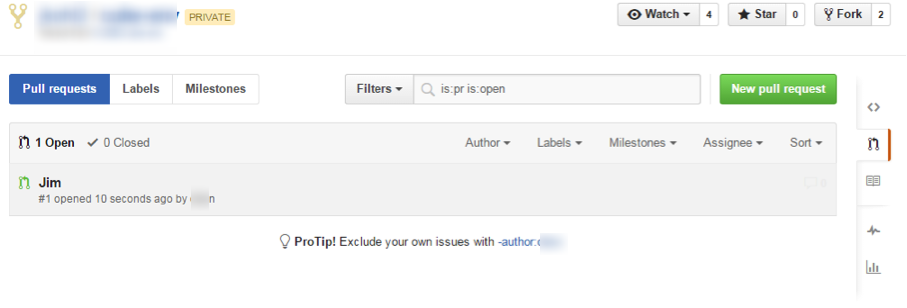
-
Once the Pull Request has been merged into the person's public repo, they can then pull that code down to their local repo using Pull in IntelliJ just like they would when updating from the main Squirrel repo.
For Further Reading
- Links